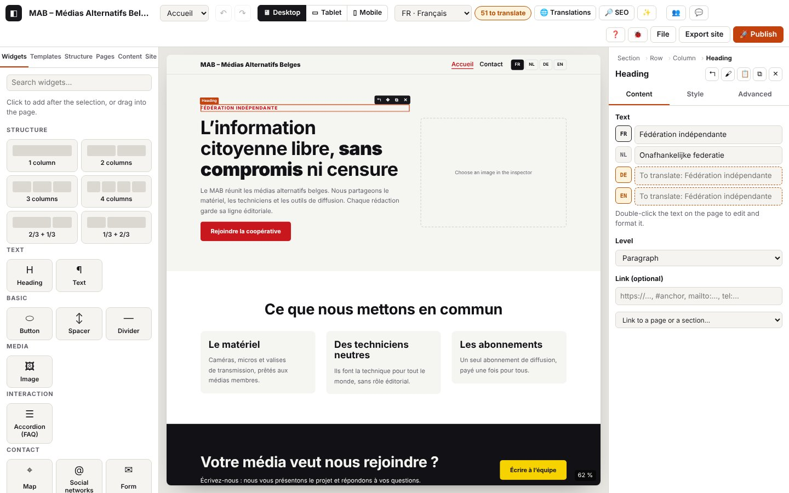

All the widgets

On this page
A widget is a building block for your page: a heading, a text, an image, a button, a map… You place them in columns, which sit in rows, which in turn sit in sections. This chapter introduces each block, one by one: what it is for, when to choose it, each of its settings, and how it turns out on the published site, on a phone and in several languages.
The examples come from the Kumakōgen tourist site built in the getting-started tutorial.
Before you start: what applies to every widget
Adding a widget
- In the left panel, Widgets tab: click a widget. It is placed just after the selected element (or at the end of the page if nothing is selected).
- Or drag it onto the page: a blue line shows where it will land. Esc cancels.
- Or press Ctrl+K, then “Add: …” (for example “Add: Gallery”).
- The Search widgets… field filters the list.
In the library, the widgets are grouped into families: Text, Basic, Media, Content, Collections, Interaction, Contact and Site. At the very top, the Structure family adds a section already divided into columns: “1 column”, “2 columns”, “3 columns”, “4 columns”, “2/3 + 1/3”, “1/3 + 2/3”.
Adjusting a widget: the inspector
Click the widget on the page: its settings appear on the right, in the inspector. At the top is the path (for example “Section › Row › Column › Heading”): click a level to select it. Just below are five buttons: ↰ (select the parent), 🖌 (copy the style), 📋 (paste the style), ⧉ (duplicate), ✕ (delete).
There are three tabs:
- Content: what the widget says (texts, links, images, lists). This is the tab described widget by widget below.
- Style: how it looks (see below).
- Advanced: settings for going further (see below).
On the page, the selected widget has a small toolbar: ↰ (parent), ✥ (handle for moving it by dragging), ⧉ (duplicate), ✕ (delete). Double-click a text to type straight onto the page.
Texts in several languages
A text setting that can be translated shows one line per site language (for example JA, EN, FR). The main language is filled in first; a missing line is tinted and shows “To translate: …” followed by the original text. On the published site, a text that has not been translated is shown in the main language.
A few settings are not translated: they are the same in every language (an email address, a price, a number, a postal address, an author’s name). They have only one line. This is pointed out for each widget.
To translate everything in one place: the 🌐 Translations button at the top (see chapter 5).
Links
A “Link” setting accepts an address you type in yourself: https://… (another site), mailto:… (an email), tel:… (a phone number) or #ancre (a spot on the page). The Link to a page or a section… list offers the site’s pages and the anchors of the open page: it is better to choose from this list, as the link will follow if the page’s address changes.
Images
An “Image” setting offers Import an image (a file from your computer: JPG, PNG, WebP, GIF, AVIF) or the address of an image online (https://…). Replace changes the image, Remove clears it. Atelier converts the imported image to WebP format, shrinks it if it is very large and prepares lighter versions for phones (see 4.13).
The Style tab
The Style tab controls how things look. The settings are arranged in seven groups; only the ones that make sense for the element are shown.
| Group | Settings |
|---|---|
| Typography | Font, Size, Weight (how thick the letters are), Line height, Letter spacing, Alignment, Case (uppercase…), Style (italic), Text color |
| Background | Background color, Background image, Image size (cover, contain, actual size), Image position |
| Spacing | Margins (top, right, bottom, left) and padding (the space between the edge and the content) |
| Border | Thickness, Type (solid, dashed, dotted), Color, Rounding, Shadow |
| Dimensions | Width, Maximum width, Minimum height |
| Layout | Space between elements, alignments, distribution, column width (see Section, Row, Column) |
| Effects | Opacity, Transform on hover (lift, grow, shrink), Transition duration, Reveal on scroll (fade, slide up, zoom) |
Things to know:
- Per device: the Desktop, Tablet and Mobile buttons in the tab (or 🖥 ▭ ▯ at the top of the screen) choose which device you are adjusting. A setting made on desktop also applies to tablet and mobile, unless you change it for them. The 🖥▭▯ button shows the three devices side by side.
- Hover: settings applied when the mouse pointer passes over the element (colours, border, shadow, transform, opacity). Normal takes you back.
- Values: type
24px,1.5rem,50%orauto(a number on its own becomes pixels), or choose from the site scale (“Scale…” for text sizes, “⇕” for spacing): that way the whole site stays consistent. ↺ goes back to the inherited value. - Colours: the swatches are the colours of the site palette (Site panel). Choose them rather than a free colour: if you change the palette, everything follows. Under the text colour and the background colour, a badge shows the contrast (how readable it is): green ✓ or red ✗.
- Search for a setting filters the list (“margin”, “color”…).
- Copy / Paste: gives one element the style of another.
- Presets: a style saved under a name (“Primary button”) that you can reuse. The list of presets, + Preset, Edit preset, Detach, Default for “…” elements (see 3.7).
- Reveal on scroll only plays in browsers that support it, and never for a visitor who has asked their device for fewer animations.
The Advanced tab
| Setting | What it is for |
|---|---|
| Anchor (for a #anchor link) | A short name (acces): a button or a menu can then take visitors straight to this spot with #acces. |
| CSS classes | For people who write CSS: a class name added to the element. |
| Accessible label | A name read out by screen readers for this area, in the language being displayed (for example “Getting there by car”). |
| Reuse | Create a component from this block: the block becomes reusable on every page and you change it once for all of them (3.11). |
| Hide on | Desktop, Tablet, Mobile: hides the element on that device. In the editor it stays visible, see-through, so that you can still select it. |
| Hide in language | Hides the element in one language (not in the main language): useful for information that only concerns part of your audience. |
| Custom CSS (experts) | property: value; declarations applied to the element. Braces, @ and url() are refused. |
Section
What it is for: a wide horizontal band across the page (the welcome area, an introduction, a gallery…). Each page is a series of sections. A section contains one or more rows.
When to use it: for each new “chapter” of the page. Add it with a layout from the Structure family (“2 columns”…) or with a ready-made template (Templates panel).
Settings (Content tab)
| Setting | What it does |
|---|---|
| Content width | Centred: the content keeps the site width (set in the Site panel) and the section stays centred. Wide: the content spreads out further. Full width: the content runs from one edge of the screen to the other. The section’s background always fills the whole width. |
| Tag (meaning for Google and screen readers) | Says what the section is: section (a part of the page, the usual choice), div (no particular meaning), article (content that can be read on its own), aside (side content), nav (navigation), header (a header), footer (a footer). |
Useful style settings: Background color, Background image (with Image size “Cover” for a large photo), top and bottom padding to give it some breathing space.
On the published site: a full-width band; its background reaches the edges of the screen.
On mobile: the section stays a band; it is the rows inside it that stack their columns.
In several languages: nothing to translate; its widgets are translated.
Accessibility: choose the right Tag; for an important section, give it an Accessible label (Advanced tab).
Tip: on an image background, check that the text stays readable (the contrast badge reminds you).
Row
What it is for: a line of columns inside a section (for example two columns side by side: a text and an image).
When to use it: it is created along with the section; add a second row when a section needs two different lines (a centred heading, then three boxes).
Settings (Content tab)
| Setting | What it does |
|---|---|
| Column layout | Picture buttons: 1 column, 2 equal columns, 3 columns, 4 columns, 2/3 + 1/3, 1/3 + 2/3, 1/4 + 3/4, 3/4 + 1/4, 1/4 + 1/2 + 1/4. One click divides the row up again. |
| Stack columns | On mobile (the usual choice: the columns move one below the other on a phone), On tablet and mobile, or Never (they stay side by side, even on a small screen). |
Useful style settings: Layout → Space between elements (the gap between the columns) and Vertical alignment of content (line the columns up at the top, in the centre or at the bottom).
On mobile: depends on “Stack columns”. Keep “On mobile”, except for very small elements (a logo and a button side by side).
Tip: always check the result with the Mobile button at the top of the screen.
Column
What it is for: the box where you place the widgets. The widgets in a column sit one below the other.
Settings: no Content tab. The column’s width is set in the Style tab, Layout group: Column width (out of 12). The row is divided into 12 parts: 6 = half, 4 = a third, 12 = the full width. This setting can change per device (for example 6 on desktop, 12 on mobile).
Useful style settings: Space between elements (the gap between the widgets in the column), Distribution (start, centre, end, spread), Vertical alignment (place this column at the top, in the centre or at the bottom of the row), and a background and rounded corners to turn it into a box.
Tip: to centre a button in a column, select the button, then Style tab → Layout → Vertical alignment: “Centre”.
Heading
Text family.
What it is for: a page or section heading (“久万高原町へようこそ”, “Discover Kumakōgen”).
When to use it: at the top of each section. Only one H1 per page: the main heading. Sections have H2 headings, and their sub-parts H3.
Settings (Content tab)
| Setting | What it does |
|---|---|
| Text (translated) | The text of the heading. Double-click it on the page to type straight in, with bold, italic or a link. |
| Level | H1 – page title, H2, H3, H4, or Paragraph (a text that looks like a heading without being one, for example a small line above a heading). |
| Link (optional) | The whole heading becomes a link. |
On the published site: a real heading, which Google and screen readers use to understand the page. Its size follows the site’s text scale.
On mobile: the size shrinks gently by itself (site scale); you can adjust it for mobile in the Style tab.
Accessibility: don’t skip a level (H2 then H4); don’t choose a level for its size, adjust the size in the Style tab instead.
Tip: the 🔎 SEO window checks that there is only one H1 per page.
Text
Text family.
What it is for: one or more paragraphs, with bold, italic, underline, links and lists.
Settings (Content tab)
| Setting | What it does |
|---|---|
| Text (translated) | The formatted text. In the inspector there is a small toolbar: B (bold), I (italic), U (underline), 🔗 (link), and a button to remove the formatting. |
The simplest way is to write on the page: double-click the text, then use the B I U 🔗 ⌫ ✨ toolbar above it. A text pasted from elsewhere loses its formatting (so the site stays tidy). ✨ offers to rewrite or proofread with the on-device AI (if it is installed, chapter 7).
On mobile: the text wraps to the width of the screen.
In several languages: one box per language in the inspector; on the page, you type in the language chosen at the top of the screen.
Accessibility: a link should say where it leads (“Museum opening hours” rather than “click here”): the 🔎 SEO window points out vague links, including in Japanese (“こちら”).
Tip: keep your paragraphs short; for a list with little pictures, use the Icon list instead.
Icon list
Text family.
What it is for: a short list where each line starts with a small pictogram (a tick, a place, a clock…).
When to use it: key points, practical information (address, phone, opening hours), what to bring.
Settings (Content tab)
| Setting | What it does |
|---|---|
| Items | The list of lines. + Element adds one; on each line: ↑ ↓ to change the order, ✕ to delete it. |
| → Icon | The pictogram for the line: Check mark, Arrow, Star, Dot, Heart, Phone, Email, Place, Clock, People, Shield, Lightning, Camera, Calendar, Tag, Globe. |
| → Text (translated) | The text of the line (bold, italic or a link are possible when you write it on the page). |
| Icon size | Small, Medium, Large. |
On the published site: a list; the icons take the site’s main colour.
Accessibility: the icons are decorative (screen readers ignore them): the text must make sense on its own.
Tip: for a phone number, make the text a tel:… link: on a smartphone, one tap starts the call.
Button
Basic family.
What it is for: inviting visitors to do something (“See the events”, “How to get here”).
Settings (Content tab)
| Setting | What it does |
|---|---|
| Button text (translated) | What is written on the button. |
| Link | Where it leads: a page of the site, an anchor, an address, or Open in a window (popup): one of your components then opens in a window on top of the page (this option only appears if the site has components). |
| Appearance | Filled (the most visible), Secondary, Outline, Plain link. |
| Size | Small, Medium, Large. |
| Open in a new tab | For a link to another site. |
On the published site: a link shaped like a button (or, for a popup, a real button that opens the window; the window closes with its cross or with Esc).
On mobile: the button stays big enough for a finger.
Accessibility: use a text that says what the action is; avoid “Click here”.
Tip: only one Filled button per section; make the others Outline or Plain link. The check before export points out a button with no link.
Spacer
Basic family.
What it is for: adding empty space between two widgets.
Settings: Height: 16, 32, 64, 96 or 128 px.
Accessibility: ignored by screen readers.
Tip: to give a whole section more breathing space, use the section’s padding instead (Style tab); keep the Spacer for a one-off gap. With Hide on → Mobile (Advanced tab), the space disappears on phones.
Divider
Basic family.
What it is for: a horizontal line separating two parts.
Settings (Content tab)
| Setting | What it does |
|---|---|
| Line | Solid, Dashed, Dotted. |
| Thickness | 1, 2 or 4 px. |
| Length | 25 %, 50 % or 100 % of the width. |
On the published site: a real dividing line (understood by screen readers).
Tip: the line takes the text colour: change it in the Style tab → Typography → Text color.
Image
Media family.
What it is for: a photo or an illustration.
Settings (Content tab)
| Setting | What it does |
|---|---|
| Image | Import an image, Replace, Remove, or the address of an image online. |
| Description (for screen readers and Google) (translated) | What the image shows, in one sentence. The ✨ Describe the image button asks the on-device AI for a suggestion (marked “to review”). Leave it empty for a purely decorative image. |
| Caption (translated) | A text shown under the image (for example where the photo comes from). |
| Format | Original, 16:9, 4:3, Square, Portrait: the image is cropped to this format. |
| Link (optional) | The image becomes clickable. |
On the published site: the image in WebP, with lighter versions that the browser chooses according to the screen size; the first image on the page loads first, the others as the visitor scrolls. If no image has been chosen, nothing is shown (and the check before export points it out).
On mobile: the image takes the width of its column; the phone downloads a lighter version.
Accessibility: the description is essential for an image that carries information. The 🔎 SEO window can describe all the images on a page that have no description in one go.
Tip: in the getting-started tutorial, the images are just illustrations: replace them with your own photos.
Gallery
Media family.
What it is for: several images in a grid, enlarged when clicked.
Settings (Content tab)
| Setting | What it does |
|---|---|
| Images | The list of images; + Image adds one. For each one: Image, Description (translated), Caption (translated). |
| Columns (desktop) | 2, 3 or 4 images per line. |
| Format | Square, 4:3, 16:9 or Original: all the thumbnails in the same format. |
| Enlarge on click | A click opens the image full size on a dark background; a click or Esc closes it again. |
On mobile: two images per line.
Accessibility: a description for each image; the enlarged view closes from the keyboard (Esc) and hands control back to the thumbnail.
Tip: a box with no image does not appear on the published site: you can prepare the gallery before you have all the photos.
Video
Media family.
What it is for: showing a YouTube or Vimeo video.
Settings (Content tab)
| Setting | What it does |
|---|---|
| YouTube or Vimeo address | Paste the video’s address (the one in the address bar or from the “Share” button). |
| Title (read by screen readers) (translated) | The name of the video, also shown on the placeholder image. |
| Preview image (optional) | The image shown before the video plays. |
| Format | 16:9, 4:3, Square, Vertical 9:16 (for a video filmed on a phone). |
On the published site: the visitor first sees an image with a ▶ button and the sentence “The video loads from YouTube when you click.” Nothing is loaded from YouTube or Vimeo before that click: no tracker when the page opens. YouTube is called in “no-cookie” mode.
In several languages: the placeholder sentence and the button are written in the language of the page (“動画を再生” in Japanese).
Tip: if the address is not recognised, the canvas says so and the check before export points it out.
Map
Contact family (in the library: “Map”, with the ⌖ icon; not to be confused with the content card).
What it is for: showing where a place is (a tourist office, the start of a walk).
Settings (Content tab)
| Setting | What it does |
|---|---|
| Address | The address looked up on the map (the same in every language). |
| Zoom (3 to 20) | 3: a whole country; 15: a neighbourhood; 20: a street. |
| Height | 240, 320, 400 or 480 px. |
On the published site: a frame with the address and “Show map (Google Maps)”. Google Maps is only loaded when the visitor clicks. An OpenStreetMap link opens the same address in a new tab.
In several languages: the address is not translated; the buttons are shown in the language of the page (“地図を表示（Google マップ）”).
Tip: write the address the way Google Maps understands it (you can check it on Google Maps first).
Social networks
Contact family.
What it is for: links to your official accounts (Facebook, Instagram…).
Settings (Content tab)
| Setting | What it does |
|---|---|
| Links | + Link for each account. For each one: Network (Facebook, Instagram, X, LinkedIn, YouTube, TikTok, Mastodon, Bluesky, Email, Website) and Address. For “Email”, a plain email address is enough. |
| Appearance | Pills or Text links. |
| Alignment | Left, Centre, Right. |
On the published site: links to other sites open in a new tab. A line with no address does not appear.
Accessibility: each link carries the name of the network.
Tip: the 🔎 SEO window reminds you that Google links your social networks to the site when this widget is present. Put it in the footer: it will then be on every page.
Form
Contact family.
What it is for: letting a visitor write to you (a question, a request).
Settings (Content tab)
| Setting | What it does |
|---|---|
| Address that receives the messages | The email address that receives the messages. It is never written out in plain text in the page. |
| Or submission address (form service, https://…) | If you use an online form service: its address. It takes priority over the email address. |
| Message subject (translated) | The subject of the email you receive. |
| Fields | The list of boxes to fill in; + Field adds one. For each one: Label (translated), Type (Short text, Email, Phone, Long text), Required. |
| Button text (translated) | For example “Send”. |
| Privacy notice (optional) (translated) | A sentence under the form. |
On the published site, depending on how you publish:
- published with OVH using publish.php: the message goes to your email address through your hosting, without the address ever appearing (chapter 9);
- with a form service: the message goes to that service;
- otherwise: the visitor’s email program opens with the message ready.
An invisible trap stops robots that fill in every field. The confirmation message is shown in the language of the page.
Accessibility: each box has its label; required boxes are marked with an asterisk and checked by the browser; the result message is announced to screen readers.
Tip: with no receiving address, the canvas shows “⚠ Enter the address that receives the messages in the inspector.” and the check before export points it out.
Icon box
Content family.
What it is for: a pictogram, a small heading and a couple of sentences (a feature, an activity).
Settings (Content tab)
| Setting | What it does |
|---|---|
| Icon | One of the 16 pictograms (see Icon list). |
| Title (translated) | The box’s heading. |
| Text (translated) | One or two sentences. |
| Layout | Icon above, Icon on the left, Centred. |
| Link (optional) | The heading becomes a link. |
When to use it: in threes, in a “3 columns” row (the Features template does it for you).
Accessibility: the heading is an H3; the icon is decorative.
Quote
Content family.
What it is for: a striking sentence or a testimonial, with its author.
Settings (Content tab)
| Setting | What it does |
|---|---|
| Quote (translated) | The sentence being quoted. |
| Author | The name (the same in every language). |
| Role or outlet (translated) | Who this person is. |
| Photo (optional) | A small round portrait. |
| Appearance | Line (a coloured line on the left), Card (a box), Large quote (in large type, with a quotation mark). |
Accessibility: screen readers treat it as a real quotation; the photo is decorative (the name is written next to it).
Tip: only quote words that were really said, with the person’s consent.
Key figures
Content family.
What it is for: a few figures in large type, each with its caption.
Settings (Content tab)
| Setting | What it does |
|---|---|
| Figures | + Figure for each one. Value (for example 120, 35 %: the same in every language) and Caption (translated). |
| Alignment | Centred, Left. |
On mobile: the figures sit side by side as long as there is room, otherwise one below the other.
Tip: every figure should have a reliable source; in the getting-started tutorial, they come from checked data.
Content card
Content family (▤ icon in the library; not to be confused with the map).
What it is for: a tile with an image, a heading, a text and a “Read more →” link.
Settings (Content tab)
| Setting | What it does |
|---|---|
| Image | The image at the top (cropped to landscape). |
| Image description (translated) | For screen readers. |
| Title (translated) | The card’s heading. |
| Text (translated) | A short text. |
| Link text (translated) | For example “Find out more”. |
| Link | Where the card leads. With no link text or no link, the “→” line does not appear. |
When to use it: three cards side by side to introduce places or pages. For a list that updates itself (events), use the Content list instead.
On mobile: the cards stack up, one per line (if the row stacks its columns on mobile).
Pricing
Content family.
What it is for: a plan with its price and what it includes.
Settings (Content tab)
| Setting | What it does |
|---|---|
| Plan (translated) | The name of the plan. |
| Price (e.g. €49) | The price (the same in every language: write the currency, for example ¥500). |
| Period (e.g. per month) (translated) | For example “per person”. |
| What is included (bulleted list) (translated) | A list; each line gets a tick. |
| Button text (translated) and Button link | The action you suggest. |
| Highlight | A coloured border and a filled button. |
| Badge (e.g. Most popular) (translated) | A small label on top. |
Tip: only show real, up-to-date prices; for a price that changes often, link to the official page instead.
Accordion (FAQ)
Interaction family.
What it is for: questions whose answer opens when clicked. Perfect for an FAQ.
Settings (Content tab)
| Setting | What it does |
|---|---|
| Questions | + Question for each one. Question (translated) and Answer (translated, can be formatted). |
| First answer open | The first answer is visible when the page loads. |
| Mark as FAQ for Google (structured data) | Adds to the published site a description of the questions and answers that Google can read. |
On the published site: each question opens and closes with a click, a tap or the keyboard (Enter, Space).
Accessibility: works with the keyboard and with screen readers, without any script.
Tip: the FAQ template (Templates panel) puts in a centred heading and accordion, with the Google option already ticked.
Site logo
Site family.
What it is for: the site’s logo (or name), which takes visitors back to the home page.
Settings (Content tab)
| Setting | What it does |
|---|---|
| Show the site name | The name is shown next to the logo. |
| Logo height | 32, 40, 56 or 72 px. |
The logo image is chosen once for the whole site: Site panel → Default header → Logo. With no logo, the site name is shown.
When to use it: in a customised header and footer (Atelier already puts it there when you choose Customise with blocks).
Accessibility: if the name is hidden, the link keeps the site name for screen readers.
Menu
Site family.
What it is for: the site’s menu.
Settings (Content tab)
| Setting | What it does |
|---|---|
| Layout | In a row (horizontal, for the header) or In a column (vertical, for the footer). |
| Alignment | Left, Centre, Right. |
| “Menu” button on mobile | On a phone, the menu folds away behind a “☰ Menu” button (only in a row). |
What the menu contains is set in the Pages panel: the order of the pages, and Customise the menu for links, submenus and labels (4.6).
In several languages: the labels follow the language of the page; the button is called “メニュー” in Japanese.
Accessibility: a real navigation area, named “Menu”; the mobile button announces whether it is open or closed.
Language switcher
Site family.
What it is for: switching from one language to another on the same page.
Settings: View: Codes (FR, NL…) (for example JA · EN · FR) or Names (Français…) (日本語 · English · Français).
On the published site: one link per site language; the current language is marked. With only one language, the widget shows nothing.
Accessibility: each link announces its language, so that the screen reader pronounces “日本語” correctly.
Tip: with the default header, the language switcher is already there (the Show the language switcher box in the Site panel). This widget is for a customised header or footer.
Content list
Collections family.
What it is for: showing the items of a collection (for example the events in your calendar), each one as a card. When you add an event to the collection, every list updates.
Settings (Content tab) — at the top, a box: Manage items, ✎ Card (design the card), ✎ Detail page; with no collection: + New collection.
| Setting | What it does |
|---|---|
| Collection | Which collection to show. |
| Layout | Card grid or List (image on the left). |
| Columns (desktop) | 1 to 4 cards per line (grid only). |
| Events | For an events calendar: All, Upcoming, Past. |
| Order | Collection order, Manual order (drag in Content), or by a field (by date, by title…). |
| Direction | Automatic, Ascending (A→Z, oldest first), Descending (Z→A, newest first). |
| Maximum number (0 = all) | For example 3 for “the next three events” on the home page. |
| Filter | Only the items with a given choice (for example a status). |
| Text when the list is empty (translated) | For example “No upcoming events for now.” |
| Link below the list (e.g. See all events) (translated) and Address of the link below the list | A button under the list. |
On the published site: for “Upcoming” and “Past”, what counts is the visitor’s date: a past event disappears from the “Upcoming” list by itself, without publishing again.
On mobile: one card per line (two on a tablet).
Tip: double-click the list to edit the card, which you design only once for all the items.
Field
Collections family.
What it is for: showing one piece of information about an item in a collection (its date, its place, its address…) in the collection’s card or detail page.
When to use it: only while editing a card or a detail page (✎ Card, ✎ Detail page). Anywhere else, the canvas shows “Field: shown in a card or a collection detail page”.
Settings (Content tab)
| Setting | What it does |
|---|---|
| Field shown | The information to show; for an events calendar, also Date and time. |
| Label before the value (optional) (translated) | For example “Place: ”. |
| Icon | None or a pictogram (Calendar, Place, Clock…). |
| Date format | “3 November 2026”, “3 Nov 2026” or “Tuesday 3 November 2026”. |
On the published site: each card shows the value of its own item; a link or an email address becomes clickable; an empty field shows nothing. An event’s “Scheduled” status is not shown (only “Cancelled”, “Postponed” and “Rescheduled” are visible).
In several languages: dates are written in the language of the page (“2026年11月3日火曜日” in Japanese).
Tip: a heading, a text or an image in the card can also be bound to a field: in the inspector, use the 🔗 Bind to a field… list next to the setting.
To go further
- Adding, moving, writing on the page: chapter 2.
- Style, presets, templates, components: chapter 3.
- Pages, menu, images, collections: chapter 4.
- Building a complete site step by step: Getting started.